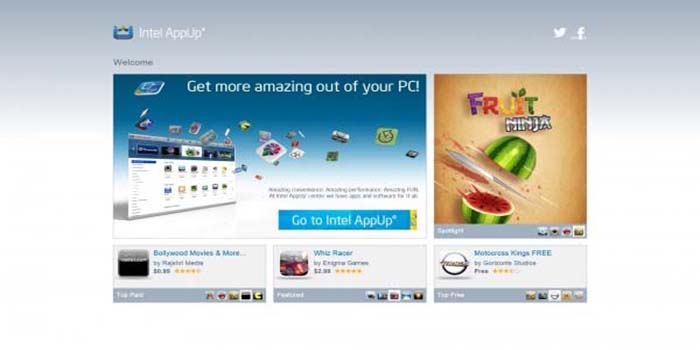
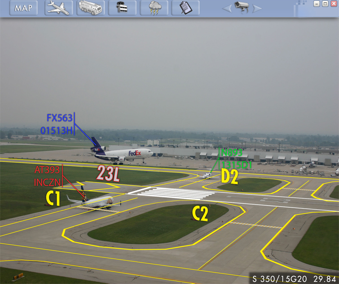

Design I helped create at Intel for their App-Up app store.
Project 2: Microsoft Volume Licensing
Design I created while working with Microsoft's Volume Licensing team.
Project 3: ARATTA

Design I created while working at Information in Place Inc. It is an augmented reality air traffic tower application to help tower controllers track and identify aircraft on the tarmac.